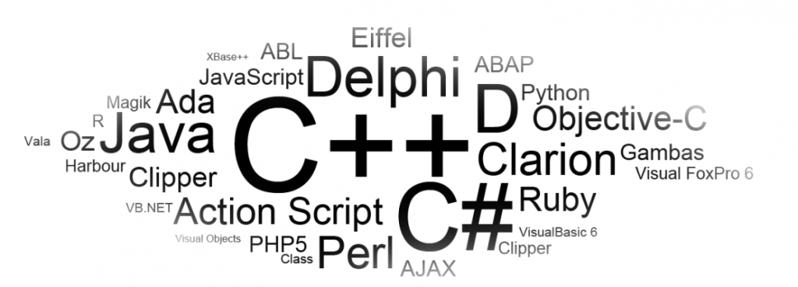
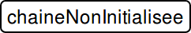
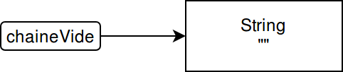
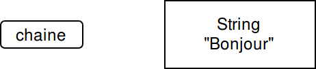
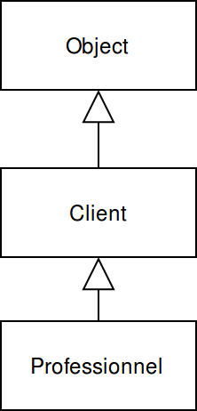

Bienvenue !
Pierre-Julien VILLOUD

Introduction
Le cours Java 210 est un pré-requis à ce cours.
La programmation objet, ou POO est de nos jours le principal paradigme de programmation.

Java est un langage totalement orienté objet
Vocabulaire de la POO
- Objet
- Instance
- Classe
- Attributs
- Méthodes
Les notions principales
Une classe est un modèle regroupant des données et des fonctions internes ou accessibles depuis l'extérieur.
Un objet est une instance d'une classe. Il est construit à partir de la classe. C'est en réalité une référence vers un espace mémoire contenant l'objet en lui-même.
La classe
- Client
- Nom
- Prénom
- Numéro
- Construire client
- Calcul réduction
Les objets (ou instances)
- M. Durand : Client
- Durand
- Jean
- 123456
- Mme Dupond : Client
- Dupond
- Christine
- 654321
Les attributs représentent les données des objets.
Les méthodes représentent les fonctions et traitements effectués sur les objets.
Relations entre les classes
Les classes ont trois types principaux de relations entre elles : dépendance, agrégation et héritage. Exemple avec les classes
Produit, Commande, CommandeSpeciale et Client d'un système de gestion de commandes.
| Relation | Équivalent | Exemple |
|---|---|---|
| Dépendance | utilise | Commande va utiliser Client afin de savoir si le compte est suffisamment crédité. En revanche, Client ne dépend pas de Commande |
| Agrégation | possède | Une Commande possède ou contient des instances d'Item |
| Héritage | est | Une CommandeSpeciale est une (ou hérite de) Commande. Toutes les données et comportements de Commande sont passés à CommandeSpeciale. CommandeSpeciale peut définir de nouvelles données et méthodes ou redéfinir des comportements dont elle a hérité. |
Comparaison avec la programmation procédurale
Programmation procédurale
- Identification des tâches et découpage en sous-tâches
- Écriture de procédures pour résoudre ces tâches
- Convient pour des problèmes simples
- Données globales
Programmation orientée objet
- Identification des objets-métier en classes
- Définition des méthodes dans chaque classe responsable
- Permet de modéliser des problèmes plus complexes
- Données protégées (principe de responsabilité)
rotation(forme, typeForme){
if(typeForme == "Carré") {
rotationCarre(forme);
} else if(typeForme == "Rond") {
//On ne fait rien
} else if(typeForme == "Triangle") {
rotationTriangle(forme);
}
}
rotationCarre(forme) {...}
rotationTriangle(forme) {...}class Forme {
void rotation() {}
}
class Carre extends Forme {
void rotation(){ /* Rotation Carre*/ }
}
class Rond extends Forme {
}
class Triangle extends Forme {
void rotation(){ /* Rotation Triangle*/ }
}
La notion de référence
Lorsqu'on construit un objet, les données le constituant sont stockées dans un endroit en mémoire qui n'est pas directement accessible. Pour y accéder, on utilise une référence qui correspond au point d'accès en mémoire de cet objet. C'est cette référence qui est stockée dans une variable.




String chaineNonInitialisee;
String chaineNull = null;
String chaineVide = "";
String chaineVide = new String("");
String chaine = "Bonjour";
chaine = null;
Une référence peut être
null, c'est-à-dire qu'elle ne fait référence à aucun objet. Un variable de type objet non initialisée n'a pas automatiquement la valeur null. Le ramasse-miette est un mécanisme interne à Java qui s'occupe à l'exécution, de gérer les espaces mémoires qui ne sont plus référencés.
Les classes standard
Java 8 propose nativement plus de 4000 classes permettant la construction d'interfaces graphiques, la manipulation de fichiers, les collections ou encore la sécurité, les bases de données...
- String
- Math
- Classes enveloppes
- Collections
La classe String
Déjà vu dans le cours précédent, la classe standard
String contient 4 attributs, 67 méthodes, 15 constructeurs, 3169 lignes...
La classe Math
La classe
Math permet d'effectuer des opérations mathématiques avancées.
| Opération | Méthode retour | Exemple |
|---|---|---|
| Arrondi | round(float ou double) int ou longceil(double) doublefloor(double) double
|
|
| Puissance | pow(double base, double exposant) double |
|
| Minimum/Maximum | min(numeric, numeric) numericmax(numeric, numeric) numeric |
|
| ... | ... | ... |
Classes enveloppes
Il existe une classe enveloppe par type primitif. Ces classes encapsulent les types primitifs et permettent de manipuler ces types comme des objets ordinaires. Elles offrent également de nombreuses méthodes en accès statique.
booleanBooleancharCharacterbyteByteshortShortintIntegerlongLongfloatFloatdoubleDouble
Boolean.logicalXor(a, b); //Ou exclusif logique entre deux booléensCharacter.isDigit('5');//true; Test si le caractère est chiffreByte.decode("0x6b");//107; Décodage de valeurs hexadécimalesShort.parseShort("5");//Renvoie le Short 5Integer.max(4, 5);//5Long.numberOfTrailingZeros(500);//2Float.isNaN(Float.POSITIVE_INFINITY - Float.POSITIVE_INFINITY);//trueDouble.isInfinite(Double.NEGATIVE_INFINITY / 0.0);//true
Autoboxing et Unboxing
Afin de faciliter l'utilisation des classes enveloppes numériques, Java a mis en place deux mécanismes : l'Autoboxing et l'Unboxing
Integer monInteger = 127;monInteger += 1;
Attention à ces mécanismes qui, lorsqu'ils ne sont pas compris peuvent produire des résultats inattendus !
Integer monInteger = 128;
Integer monInteger2 = 128;
monInteger <= monInteger2;
monInteger == monInteger2;
monInteger.equals(monInteger2);Integer monInteger = 127;
Integer monInteger2 = 127;
monInteger == monInteger2;Les collections
Java propose un certain nombre de classes pour gérer des collections d'objet.

Pour savoir quelle collection choisir par rapport à vos besoins, c'est par ici.
Les listes ArrayList
Les listes
ArrayList permettent de gérer un ensemble ordonné d'objets de même type sans nécessité de déclarer une taille.
ArrayList<String> noms = new ArrayList();
noms.add("Jean");//[ "Jean" ]
noms.add(0, "Pierre"); //[ "Pierre", "Jean" ]
noms.addAll(Arrays.asList("Simon", "Jacques"));//[ "Pierre", "Jean", "Simon", "Jacques"])
noms.isEmpty();//false
noms.contains("Simon");//true
noms.indexOf("Pierre");//0
noms.size();//4
noms.get(2);//"Simon"
noms.remove(1);//[ "Pierre", "Simon", "Jacques"])
noms.remove("Pierre");//[ "Simon", "Jacques"])
noms.sort(String::compareTo);//Notation Java 8 [ "Jacques", "Simon"])
noms.sort(new Comparator<String>() {
public int compare(String o1, String o2) {
return o1.compareTo(o2);
}
});//Notation Java < 8 [ "Jacques", "Simon"])
for (String prenom : noms){
System.out.println(prenom);
}
La classe
Vector est à éviter pour des raisons notamment de performances. Utiliser la classe ArrayList à la place.
Les ensembles HashSet
Les ensembles
HashSet permettent de gérer un ensemble non ordonné d'objets distincts de même type sans nécessité de déclarer une taille.
HashSet<String> setPrenoms = new HashSet();
setPrenoms.add("Jean");//[ "Jean" ]
setPrenoms.add("Jean");//N'a aucun effet car l'item est déjà présent !
setPrenoms.add("Pierre");[ "Pierre", "Jean" ]]
setPrenoms.addAll(Arrays.asList("Simon", "Jacques"));//[ "Pierre", "Jean", "Simon", "Jacques"])
setPrenoms.isEmpty();//false
setPrenoms.contains("Simon");//true
setPrenoms.size();//4
setPrenoms.remove("Pierre");//[ "Jean", Simon", "Jacques"])
for (String prenom : setPrenoms){
System.out.println(prenom);//L'ordre d'affichage est potentiellement différent de l'ordre d'insertion
}Les tables de hachage HashMap
Les tables de hachage
HashMap permettent gérer un ensemble de couple clé/valeur. Les clés sont distinctes mais pas les valeurs.
HashMap<Integer, String> mapNombres = new HashMap();
mapNumbers.put(1, "Un");//[ 1 => "Un" ]
mapNumbers.put(3, "Trois");//[ 1 => "Un", 3 => "Trois"]
mapNumbers.put(2, "DEUX");//[ 1 => "Un", 3 => "Trois", 2 => "DEUX" ]
mapNumbers.put(2, "Deux");//[ 1 => "Un", 3 => "Trois", 2 => "Deux" ]
mapNumbers.putIfAbsent(2, "AAA");//[ 1 => "Un", 3 => "Trois", 2 => "Deux" ]
mapNombres.isEmpty();//false
mapNombres.containsKey(2);//true
mapNumbers.containsValue("Un");//true
mapNombres.size();//3
mapNombres.remove(2);//[ 1 => "Un", 3 => "Trois"]
for (Integer n : mapNumbers.keySet()){
System.out.println(mapNumbers.get(n));//Affiche "Un" et "Trois"
}Créer ses propres classes
Voici les différentes étapes pour créer sa propre classe
- Définir son nom et la placer dans un package
- Définir ses attributs et ses relations d'agrégation
- Implémenter un ou plusieurs constructeurs
- Implémenter des méthodes
- Gérer la visibilité des attributs et des méthodes
La notion de package
Java permet de regrouper les classes en un ensemble appelé
package qui fonctionne comme une arborescence de fichiers
package com.ipiecoles.java.java220;
import java.util.Date;
import java.io.*;
import static java.lang.System.out;
public class Exemple {
Date dateJava;
java.sql.Date dateSql;
File fichier;
void bonjour(){
out.print("Bonjour !");
}
}
Une pratique communément adoptée est de se baser sur le nom de domaine de l'entreprise (mais écrit dans le sens inverse) pour nommer les packages et d'utiliser des sous-packages pour les différents projets. Exemple
com.ipiecoles.java.java220
Les attributs
Les attributs (parfois appelés champs d'instances ou propriétés) représentent les données de la classe. C'est ce qui va caractériser une instance de classe.
- Commande
- Prochain Numéro
- Numéro
- Client
- Priorité
- Items
- Est réglée ?
- ...
class Commmande {
static long prochainNumero = 1L;
final Long numero;
Client client;
int priorite;
HashMap<Integer, Item> items;
Boolean estReglee = false;
}
Les attributs sont typés et peuvent avoir une valeur par défaut (qui sera affectée à chaque instance).
Les méthodes
Les méthodes représentent les fonctions ou traitements effectués sur les instances des classes. Elles sont généralement nommées avec un verbe d'action et manipulent les attributs de la classe.
- Commande
- Calcul d'un délai de livraison
- Régler une commande
- Ajouter un item
- ...
class Commande {
static Integer calculDelaiLivraison(int priorite){
//Livraison plus rapide en fonction de la priorité
return priorite == 1 ? 3 : 5;
}
void reglerCommande(Double montant) {
//Réglement de la commande
this.montantRegle -= montant;
this.client.metAJourSolde(montant);
}
void ajouterItem(Item item) {
//Ajout d'une item dans la map
this.items.put(item.getId(), item);
}
}
Elles ont un type de retour et potentiellement des paramètres d'entrée (en dehors des attributs de la classe). Pour manipuler les attributs de la classe, on peut les préfixer par
this pour éviter de les mélanger avec des paramètres d'entrée.
Les constructeurs
Pour instancier des objets d'une classe, il est nécessaire d'utiliser des constructeurs. Les constructeurs sont des méthodes comme les autres à l'exception de leur signature qui est un peu particulière, le type de retour et le nom de la méthode ne faisant qu'un.
Commande(){
}
Commande(Long numero, Client client) {
this.numero = numero;
this.client = client;
}
Commande(Long numero, Client client, int maPriorite) {
this(numero, client);
priorite = maPriorite;
}
Commande c = new Commande();
c = new Commande(12345L, new Client());
On déclare généralement uniquement les constructeurs permettant d'instancier des objets cohérents. Exemple : Une commande doit obligatoirement posséder au minimum un numéro et un client. On ne déclare alors pas de constructeur par défaut et tous les constructeurs doivent au moins avoir ces deux paramètres.
Visibilité
La notion de visibilité est au cœur de la POO. Elle est la base du principe d'encapsulation et d'interface. En Java, il existe quatre modificateurs de visibilité permettant de définir la visibilité des méthodes et attributs au sein d'une classe. Ils sont spécifiés avant la déclaration des attributs ou des méthodes.
| Modificateur | Effet | Utilisation |
|---|---|---|
private |
Visible uniquement par la classe | Attributs des classes, méthodes internes |
public |
Visible par toutes les classes | Constructeurs (!), getters et setters (pour les champs pouvant être manipulés), constantes, méthodes en lecture seule ou devant être utilisées en dehors de la classe. |
protected |
Visible par toutes les sous-classes et tout le package | Sauf cas particulier, ne pas déclarer les attributs en protected. En revanche les méthodes protégées sont plus courantes. |
| (par défaut) | Visible par tout le package | Éviter de ne pas spécifier la visibilité d'une méthode ou d'un attribut ! |
De manière générale, il est recommandé de restreindre autant que possible l'accès aux attributs et méthodes.
Encapsulation
Grâce aux modificateurs de visibilité, il est possible de gérer l'encapsulation des classes. Cela revient à cacher les détails d'implémentation à tout ce qui est extérieur à la classe, et à exposer uniquement ce qui est nécessaire afin d'assurer l'intégrité des données.
public class Bonjour {
public static final String BASE_MESSAGE = "Bonjour" ;
private String nom;
private Date dateCourante;
public Bonjour(String nom){
this.nom = nom;
this.dateCourante = new Date();
}
public void ditBonjour(){ out.println(formaterMessage()); }
private String formaterMessage(){ return BASE_MESSAGE + " " + this.nom; }
public String getNom() { return nom; }
public void setNom(String nom) { this.nom = nom; }
public Date getDateCourante() { return dateCourante; }
}
Un attribut ou une méthode peut être déclarée
static. Dans ce cas, il est possible d'utiliser l'attribut ou d'appeler la méthode sans avoir d'instance de l'objet. Il faut cependant que l'attribut ou la méthode n'ait pas besoin d'accéder à des attributs non statiques.
Héritage
L'héritage est une notion centrale de la POO. Ce mécanisme permet de créer des classes à partir de classes existantes. Les attributs et méthodes de la superclasse sont transmis à la sous-classe (on dit qu'une sous-classe hérite d'une superclasse) qui peut alors définir d'autres attributs et méthodes ou redéfinir certains comportements (à condition que la superclasse l'autorise).
public class Client {
private long numero;
private double solde;
private String adresseLivraison, adresseFacturation;
public Client(long numero, double solde, String adresseLivraison, String adresseFacturation) {
this.numero = numero; this.solde = solde;
this.adresseLivraison = adresseLivraison;
this.adresseFacturation = adresseFacturation;
}
public final double calculMontant(double montantHT){
return montantHT * tauxTva();
}
protected double tauxTva(){
return 1.2;//Par défaut on paye avec 20% de TVA
}
}
public class Professionnel extends Client {
private String raisonSociale;
private String siret;
public Professionnel(long numero, double solde, String adresseLivraison, String adresseFacturation, String raisonSociale, String siret) {
super(numero, solde, adresseLivraison, adresseFacturation);
this.raisonSociale = raisonSociale; this.siret = siret;
}
protected double tauxTva(){
return 1.0;//Les pros payent en HT
}
}
Hiérarchie d'héritage et classe Object
L'héritage n'est pas un limité à un niveau. Ainsi, dans l'exemple précédent, on peut faire hériter une autre classe de
Professionnel. En particulier, toutes les classes (même les vôtres hérite de la superclasse cosmique Object). En revanche, il n'est pas possible en Java, d'hériter de deux classes différentes.
- Object
equals
hashCode
toString- ...
class Client {
...
public boolean equals(Object o) {
if (this == o) return true;
if (o == null) return false;
if (getClass() != o.getClass()) return false;
Client c = (c) o;
return numero == c.numero &&
Double.compare(c.solde, solde) == 0 &&
Objects.equals(adresseLivr, c.adresseLivr) &&
Objects.equals(adresseFact, c.adresseFact);
}
public String toString() {
return "Client{" +
"numero=" + numero + ", solde=" + solde +
", adresseLivr='" + adresseLivr + '\'' +
", adresseFact='" + adresseFact + '\'' +
'}';
}
}

Polymorphisme
Pour savoir si l'héritage est le bon concept à implémenter entre deux classes, il suffit de se poser la question est. Si tous les objets de la sous-classe sont des objets de la superclasse, alors l'héritage est le bon concept. Une instance d'une sous-classe est donc également une instance de la superclasse (l'inverse est faux). On appelle ce mécanisme, le polymorphisme.
Boolean estClient, estProfessionnel, estObject;
Client c; Professionnel p;
c = new Client();
estClient = c instanceof Client; //true
estObject = c instanceof Object; //true (toujours...)
c = new Professionnel();
estClient = c instanceof Client; //true
estProfessionnel = c instanceof Professionnel; //true
p = new Professionnel();
estClient = p instanceof Client; //true
estProfessionnel = p instanceof Professionnel; //true
p = new Client();//Erreur de compilation
Un des gros intérêts du polymorphisme est de pouvoir traiter un objet comme instance de sa classe, ou de n'importe quelle superclasse (y compris
Object).
Exemple d'usage du polymorphisme
Il est possible de stocker des collections d'objets du type d'une superclasse est d'y stocker des objets de la superclasse et de n'importe quelle sous-classe.
Client c = new Client();
Professionnel p = new Professionnel();
Client[] clients = new Client[2];
Professionnel[] pros = new Professionnel[1];
clients[0] = c; clients[1] = p;
pro[0] = p;
Boolean txTva = p.tauxTva() == clients[1].tauxTva();//true
Client[] clientsPros = pros;//OK
clientsPros[0] = new Client();//Erreur à l'exécution
ArrayList<Object> objects = new ArrayList();
objects.add(c); objects.add(p);
objects.add(new Integer(5));
objects.get(1).tauxTva()//Erreur de compilation
((Client)objects.get(1)).tauxTva(); //OK
((Professionnel)objects.get(1)).tauxTva(); //OK
((Professionnel)objects.get(0)).tauxTva(); //Erreur à l'exécutionSurcharge et redéfinition
La surcharge permet de définir plusieurs méthodes avec le même nom, mais dont la signature (paramètres et/ou type de retour) est différente.
La redéfinition est le fait de changer le code d'une méthode issue de la superclasse.
La redéfinition est le fait de changer le code d'une méthode issue de la superclasse.
public class Client {
//Surchages
public void ajouterItem(Item item) {
...
}
public void ajouterItem(String nom, int quantite){
...
}
public Item ajouterItem(String nom, int quantite){
...
}
//Redéfinition
public String toString(){
super.toString() + ...;
}
}
La résolution de surcharge est fait par le compilateur qui choisit quelle fonction est appelée en fonction des paramètres et du type de retour.
La résolution d'une méthode redéfinie est faite à l'exécution par la JVM qui sélectionne la méthode à exécuter en fonction du type réel de l'objet.
La résolution d'une méthode redéfinie est faite à l'exécution par la JVM qui sélectionne la méthode à exécuter en fonction du type réel de l'objet.
Classes abstraites
Il arrive que les superclasses deviennent de plus en plus abstraites et servent de moule pour les sous-classes permettant de mettre en commun des attributs et des méthodes.
public abstract class Client {
private long numero;
public Client(long numero) {
this.numero = numero;
}
public double calculMontant(double montantHT){
return montantHT * tauxTva();
}
public abstract double tauxTva();
}public class Professionnel extends Client {
private String raisonSociale;
public Professionnel(long numero, String raisonSociale) {
super(numero);
this.raisonSociale = raisonSociale;
}
public double tauxTva(){
return 1.0;//Les pros payent en HT
}
}
public class Particulier extends Client {
private String nom;
public Particulier(long numero, String nom) {
super(numero);
this.nom = nom;
}
public double tauxTva(){
return 1.2;//Les particuliers payent en TTC
}
}
Un
Client est soit un Professionnel, soit un Particulier, cela n'a pas vraiment de sens d'avoir une instance de type Client. On peut donc la rendre abstraite. Il ne sera possible alors que d'instancier une sous-classe. On peut continuer à utiliser le type Client dans des listes ou des tableaux
Bonnes pratiques
Quelques bonnes pratiques à suivre lorsqu'on utilise les mécanisme d'héritage.
- Mettre les attributs et méthodes communs dans la superclasse.
- Ne pas utiliser
protectedsur les attributs et bien réfléchir si c'est utile lors de l'utilisation sur une méthode. - Utiliser l'héritage que lorsqu'il y a une relation d'appartenance est.
- Ne pas utiliser l'héritage à moins que toutes les méthodes et attributs aient du sens pour les sous-classes.
- Ne pas modifier le comportement attendu d'une méthode lors de sa redéfinition
- Utiliser le polymorphisme à la place de tests
instanceof
Classes final
Une classe peut être déclarée
final afin d'empêcher toute autre classe d'hériter de celle-ci. Les méthodes d'une classe final sont automatiquement final contrairement aux attributs.
final class CommandeSpeciale extends Commande {
...
}
public class CommandePlusSpeciale extends CommandeSpeciale { //Erreur de compilation
}
La classe
String est final. Il n'est pas possible d'en hériter. Cela permet notamment de s'assurer qu'une référence à String correspond bien au type de base. Ce mécanisme n'est à utiliser que s'il est vraiment nécessaire.
Classe générique
La programmation générique consiste à écrire du code qui puisse être utilisé par des types différents. Une classe générique est une classe paramétrée par une ou plusieurs variables de type.
public class Paire<T, U> {
private T premier;
private U second;
public Paire(T premier, U second) {
this.premier = premier;
this.second = second;
}
public U getSecond() { return second; }
public T getPremier() { return premier; }
public void setSecond(U second) { this.second = second; }
public void setPremier(T premier) { this.premier = premier; }
}Paire<String, Integer> p = new Paire<String, Integer>("Un", 1);
Paire<String, Integer> p = new Paire<>("Un", 1);//Java 7+
String s = p.getPremier();
p.setSecond(1);
Paire<String, Integer> p2 = new Paire("Un", 1);//Warning
p2.setPremier(1);//Erreur de compilation
Paire<String, Integer> p2 = new Paire(5, false);//Warning
Integer i = p2.getSecond();//ClassCastException
Paire p3 = new Paire("Un", 1);//Warning
p3.setPremier(false);//Warning
C'est ce principe qui est utilisé dans les collections comme
ArrayList<T>, HashSet<T> ou HashMap<K,V>.
Méthodes génériques
Il est aussi possible de déclarer une méthode générique dans une classe classique.
public class ArrayIpi {
public static <T> T getMiddle(T[] a)
{
return a[a.length / 2];
}
public static <T> T min(T[] a) {
if(a == null || a.length == 0) {
return null;
}
T min = a[0];
for (int i = 1; i < a.length; i++){
if(min.compareTo(a[i]) > 0){
min = a[i];
}
}
return min;
}
}
String[] noms = {"Jean", "Pierre", "François"};
String milieu = ArrayIpi.<String>getMiddle(noms);
String milieu = ArrayIpi.getMiddle(noms);
ArrayIpi.min(noms);//François
Lorsqu'on veut qu'une variable de type étende plusieurs types, on utilise la notation
T extends Comparable & Serializable
Interfaces
Lorsqu'un classe abstraite ne possède aucun attribut (en dehors de constantes) et aucune méthode non statique, on peut la remplacer par une interface.
public interface Client {
public static final double PRIX_BASE = 1.0;
public abstract double tauxTva();
public default void affichePrixBase(){
System.out.println("Prix de base : " + PRIX_BASE);
}
}
public class Particulier implements Client {
public double tauxTva(){
return PRIX_BASE + 0.2;
}
}
Client client = new Particulier();//OK
Client client2 = new Client();//Erreur de compilation
Il est possible de déclarer des variables dont le type est une interface.
Une classe peut implémenter plusieurs interfaces.
Une interface peut hériter d'une autre interface.
Une classe peut implémenter plusieurs interfaces.
Une interface peut hériter d'une autre interface.
Implémentations multiples
L'intérêt principal des interfaces est l'implémentation multiple (alors que l'héritage est simple). Une classe peut ainsi implémenter plusieurs interfaces.
public interface Comparable<T> {
int compareTo(T o);
}
public class Particulier implements Client, Comparable<Client> {
private double solde;
public Particulier(double solde) { this.solde = solde; }
public int compareTo(Client o) {
return Double.compare(solde, o.solde);
}
public double tauxTva(){
return 1.2;
}
}
Particulier[] clients = new Particulier[3];
clients[0] = new Particulier(3500.0);//Client 1
clients[1] = new Particulier(6500.0);//Client 2
clients[2] = new Particulier(5500.0);//Client 3
Arrays.sort(clients);//Client 1, 3, 2
De nombreuses interfaces standard existent, comme ici
Comparable
Classes internes
Une classe interne est une classe qui est définie à l'intérieur d'une classe. Ce mécanisme est intéressant notamment dans le cadre de la programmation événementielle. Voici quelques avantages à l'utilisation des classes internes : .
- Elles ne sont pas visibles des autres classes du package de la classe externe.
- Les méthodes des classes internes peuvent accéder aux attributs et méthodes de la classe interne (même s'ils sont
private). - C'est ce mécanisme qui est utilisé dans les classes anonymes
- Lors de l'instanciation d'un objet d'une classe interne, l'objet de la classe externe qui lui a donné naissance lui est systématiquement associé.
La définition d'une classe interne n'implique pas automatiquement d'attribut de ce type dans la classe externe. Il faut déclarer explicitement un attribut lorsqu'on en a besoin.
Les classes internes ont une syntaxe complexe et ne doit être utilisé que lorsqu'il est nécessaire et maîtrisé.
Les classes internes ont une syntaxe complexe et ne doit être utilisé que lorsqu'il est nécessaire et maîtrisé.
public class Commande {
private List<Item> items;
private double tva = 1.2;
public void ajouterItem(String nm, int qte, double px) {
Item item = new Item();
item.nom = nm;
item.qte = qte;
item.prix = px;
items.add(item);
}
private class Item {
private int qte;
private double prix;
private String nom;
public double prixItem(){ return qte * prix * tva; }
}
public double prixTotal(){
return items.stream().map(Item::getPrixLigne)
.reduce(0d, Double::sum);
}
}
...
Commande commande = new Commande();
Commande.Item item = commande.new Item();Classes internes locales
On peut déclarer une classe interne locale à une méthode. L'instanciation de cette classe n'est alors possible que dans la méthode en question.
public class Item {
private String nom;
private int quantite;
private double prix;
public void afficheItem(){
final String AFFICHAGE = "Affichage de l'item : ";
boolean accessibleAfficheur = false;
class Afficheur {
private String texte;
public Afficheur() {
this.texte = AFFICHAGE + nom + ", qte:" + quantite + ", prix:" + prix;
}
public void affiche(){ System.out.println(texte); }
}
}
}
new Item("Produit", 5, 12.0).afficheItem();
//"Affichage de l'item : Produit, qte: 5, prix: 12.0"
En plus des accès classiques à la classe externe, la classe interne locale a également accès à toutes les variables locales
final de la méthode.
Les classes internes anonymes
Il est possible de déclarer ponctuellement une classe, sans lui donner de nom lorsque son usage est très ponctuel, on parle de classe interne anonyme. Ce mécanisme est beaucoup utilisé en programmation événementielle.
public class Particulier implements Client, Comparable<Client> {
private double solde;
public Particulier(double solde) { this.solde = solde; }
public int compareTo(Client o) {
Comparator<Particulier> comparator = new Comparator<Particulier>() {
public int compare(Particulier p1, Particulier p2) {
return p1.solde.compareTo(p2.solde) ;
}
};
return comparator.compare(this, o) ;
}
}
Cette notation permet de se rapprocher du paradigme de programmation fonctionnelle.
Les lambdas
Utilisables à partir de Java 8, les lambdas sont une nouvelle façon d'écrire du code, de manière plus concise.
Comparator<Particulier> comparator = new Comparator<Particulier>() {
public int compare(Particulier p1, Particulier p2) {
return p1.getSolde().compareTo(p2.getSolde()) ;
}
};
Comparator<Particulier> comparator = (Particulier p1, Particulier p2) -> o1.getSolde().compareTo(o2.getSolde());
Comparator<Particulier> comparator = (Particulier p1, Particulier p2) -> {
Double s1 = o1.getSolde(); Double s2 = o2.getSolde();
return s1.compareTo(s2);
});
Comparator ne définit qu'une seule méthode, on parle d'interface fonctionnelle. La JVM sait donc que c'est la méthode compareTo qui est redéfinie. Plus concis, les lambdad sont cependant moins pratique à debugger.
Les références de méthodes
Les références de méthodes sont une notation introduite également par les lambdas qui permettent de simplifier encore plus les classes anonymes.
public class Particulier {
private Long numero;
private Double solde;
public static int compareSolde(Particulier a, Particulier b) {
return a.solde.compareTo(b.solde);
}
}
...
public class ComparaisonClient {
public int compareSolde(Particulier a, Particulier b) {
return a.getSolde().compareTo(b.getSolde());
}
}
...
public interface ParticulierFactory{
public abstract getParticulier(Long numero, Double solde);
}Particulier[] clients = { new Particulier(1L, 1200.0), ... };
//Référence à une méthode statique
Arrays.sort(particuliers, Particulier::compareSolde);
//Référence d'une méthode d'instance d'un objet spécifique
ComparaisonClient comp = new ComparaisonClient();
Arrays.sort(clients, comp::compareSolde);
//Référence de la méthode d'instance compareToIgnoreCase
//d'un objet spécifique du type particulier String
String[] myArray = {"one", "two", "three", "four"};
Arrays.sort(myArray, String::compareToIgnoreCase);
//Référence à un constructeur
ParticulierFactory partFactory = Particulier::new;
Particulier p = partFactory.getParticulier(123L, 250.0);
La notation
:: peut faire référence à une méthode statique, une méthode d'instance d'un objet spécifique, une méthode d'instance d'un objet spécifique d'un type particulier, ou d'un constructeur.
Les Streams
Cette API est disponible à partir de Java 8 et permet de rendre plus aisée et concise la gestion des
Collections. Elle s'appuie largement sur les lambda.
List<String> noms = Arrays.asList("pierre", "jean", "jeremy", "marc", "jennifer");
noms.stream()
.filter(x -> x.contains("je"))
.map(x -> x.substring(0, 1).toUpperCase() + x.substring(1))
.sorted()
// Affichage :
// Jean
// Jennifer
// Jeremy
.forEach( System.out::println );
List<Commande> commandes = ... ;
List<Client> clients = commandes.stream()
.map( c -> c.getClient() )
.collect( Collectors.toList() );